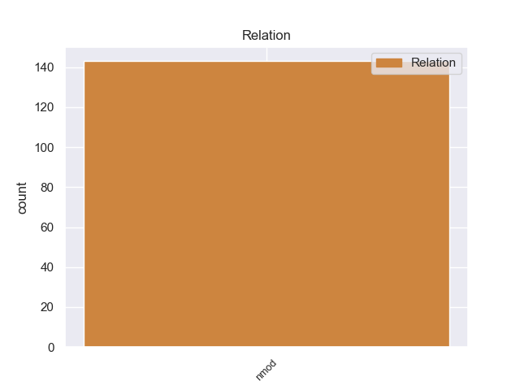
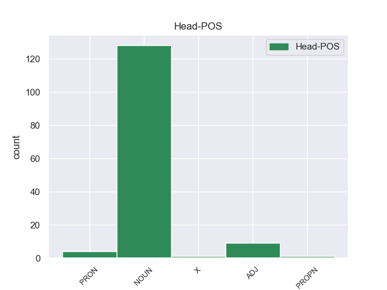
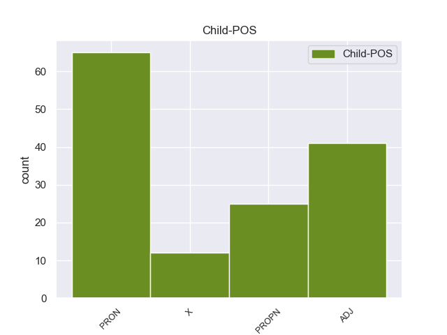

Distribution of features within this leaf



Agreement Rules sorted by frequency.
- When the dependent token is the nominal modifier(nmod) of the head token, and the head token is NOUN and the dependent token is PRON.
1 Σ _ _ _ _ 0 _ _ _
2 τις _ _ _ _ 0 _ _ _
3 4_Νοεμβρίου _ _ _ _ 0 _ _ _
4 ο _ _ _ _ 0 _ _ _
5 Βενιζέλος _ _ _ _ 0 _ _ _
6 αναχώρησε _ _ _ _ 0 _ _ _
7 για _ _ _ _ 0 _ _ _
8 το _ _ _ _ 0 _ _ _
9 Παρίσι _ _ _ _ 0 _ _ _
10 , _ _ _ _ 0 _ _ _
11 δηλώνοντας _ _ _ _ 0 _ _ _
12 ότι _ _ _ _ 0 _ _ _
13 αποσύρεται _ _ _ _ 0 _ _ _
14 από _ _ _ _ 0 _ _ _
15 την _ _ _ _ 0 _ _ _
16 ενεργό _ _ _ _ 0 _ _ _
17 πολιτική _ _ _ _ 0 _ _ _
18 και _ _ _ _ 0 _ _ _
19 σκοπεύει _ _ _ _ 0 _ _ _
20 να _ _ _ _ 0 _ _ _
21 ιδιωτεύσει _ _ _ _ 0 _ _ _
22 αλλά _ _ _ _ 0 _ _ _
23 αν _ _ _ _ 0 _ _ _
24 η _ _ _ _ 0 _ _ _
25 χώρα _ _ _ _ 0 _ _ _
26 ζητήσει _ _ _ _ 0 _ _ _
27 τις _ _ _ _ 0 _ _ _
28 υπηρεσίες _ _ _ _ 0 _ _ _
29 του _ _ _ _ 0 _ _ _
30 σ _ _ _ _ 0 _ _ _
31 το _ _ _ _ 0 _ _ _
32 εξωτερικό _ _ _ _ 0 _ _ _
33 , _ _ _ _ 0 _ _ _
34 θα _ _ _ _ 0 _ _ _
35 είναι _ _ _ _ 0 _ _ _
36 σ _ _ _ _ 0 _ _ _
37 τη _ _ _ _ 0 _ _ _
38 διάθεσή διάθεσή NOUN _ Gender=Fem|Number=Sing 0 _ _ _
39 της της PRON _ Case=Acc,Nom|Gender=Fem|Number=Sing|Person=3|PronType=Prs 38 nmod _ _
40 . _ _ _ _ 0 _ _ _
1 Θα _ _ _ _ 0 _ _ _
2 ήθελα _ _ _ _ 0 _ _ _
3 να _ _ _ _ 0 _ _ _
4 επιστήσω _ _ _ _ 0 _ _ _
5 την _ _ _ _ 0 _ _ _
6 προσοχή _ _ _ _ 0 _ _ _
7 όλων _ _ _ _ 0 _ _ _
8 των _ _ _ _ 0 _ _ _
9 συναδέλφων _ _ _ _ 0 _ _ _
10 σ _ _ _ _ 0 _ _ _
11 το _ _ _ _ 0 _ _ _
12 γεγονός _ _ _ _ 0 _ _ _
13 ότι _ _ _ _ 0 _ _ _
14 , _ _ _ _ 0 _ _ _
15 εάν _ _ _ _ 0 _ _ _
16 υπάρχουν _ _ _ _ 0 _ _ _
17 κάποιες _ _ _ _ 0 _ _ _
18 ελευθερίες _ _ _ _ 0 _ _ _
19 οι _ _ _ _ 0 _ _ _
20 οποίες _ _ _ _ 0 _ _ _
21 είναι _ _ _ _ 0 _ _ _
22 ζωτικής _ _ _ _ 0 _ _ _
23 σημασίας _ _ _ _ 0 _ _ _
24 για _ _ _ _ 0 _ _ _
25 την _ _ _ _ 0 _ _ _
26 άσκηση _ _ _ _ 0 _ _ _
27 του _ _ _ _ 0 _ _ _
28 λειτουργήματος _ _ _ _ 0 _ _ _
29 της _ _ _ _ 0 _ _ _
30 δημόσιας _ _ _ _ 0 _ _ _
31 εκπροσώπησης _ _ _ _ 0 _ _ _
32 , _ _ _ _ 0 _ _ _
33 ιδίως _ _ _ _ 0 _ _ _
34 για _ _ _ _ 0 _ _ _
35 ένα _ _ _ _ 0 _ _ _
36 Κοινοβούλιο _ _ _ _ 0 _ _ _
37 σαν _ _ _ _ 0 _ _ _
38 το _ _ _ _ 0 _ _ _
39 δικό _ _ _ _ 0 _ _ _
40 μας _ _ _ _ 0 _ _ _
41 , _ _ _ _ 0 _ _ _
42 η _ _ _ _ 0 _ _ _
43 ελευθερία _ _ _ _ 0 _ _ _
44 της _ _ _ _ 0 _ _ _
45 επικοινωνίας _ _ _ _ 0 _ _ _
46 με _ _ _ _ 0 _ _ _
47 άλλους _ _ _ _ 0 _ _ _
48 πολίτες _ _ _ _ 0 _ _ _
49 και _ _ _ _ 0 _ _ _
50 με _ _ _ _ 0 _ _ _
51 τους _ _ _ _ 0 _ _ _
52 πολίτες _ _ _ _ 0 _ _ _
53 τρίτων _ _ _ _ 0 _ _ _
54 χωρών _ _ _ _ 0 _ _ _
55 , _ _ _ _ 0 _ _ _
56 καθώς _ _ _ _ 0 _ _ _
57 και _ _ _ _ 0 _ _ _
58 η _ _ _ _ 0 _ _ _
59 ελευθερία ελευθερία NOUN _ Gender=Fem|Number=Sing 0 _ _ _
60 μετακίνησης μετακίνησηo ADJ _ Gender=Fem|Number=Sing 59 nmod _ _
61 , _ _ _ _ 0 _ _ _
62 είναι _ _ _ _ 0 _ _ _
63 κρίσιμες _ _ _ _ 0 _ _ _
64 για _ _ _ _ 0 _ _ _
65 τη _ _ _ _ 0 _ _ _
66 διεκπεραίωση _ _ _ _ 0 _ _ _
67 του _ _ _ _ 0 _ _ _
68 έργου _ _ _ _ 0 _ _ _
69 μας _ _ _ _ 0 _ _ _
70 . _ _ _ _ 0 _ _ _
1 Aussie _ _ _ _ 0 _ _ _
2 Rules _ _ _ _ 0 _ _ _
3 Footy _ _ _ _ 0 _ _ _
4 es _ _ _ _ 0 _ _ _
5 un _ _ _ _ 0 _ _ _
6 videojuego videojuego NOUN _ Gender=Masc|Number=Sing 0 _ _ _
7 basado _ _ _ _ 0 _ _ _
8 en _ _ _ _ 0 _ _ _
9 el _ _ _ _ 0 _ _ _
10 fútbol _ _ _ _ 0 _ _ _
11 australiano _ _ _ _ 0 _ _ _
12 , _ _ _ _ 0 _ _ _
13 para _ _ _ _ 0 _ _ _
14 el _ _ _ _ 0 _ _ _
15 Nintendo nintendo PROPN _ Gender=Masc|Number=Sing 6 nmod _ _
16 Entertainment _ _ _ _ 0 _ _ _
17 System _ _ _ _ 0 _ _ _
18 por _ _ _ _ 0 _ _ _
19 Mattel _ _ _ _ 0 _ _ _
20 en _ _ _ _ 0 _ _ _
21 1991 _ _ _ _ 0 _ _ _
22 , _ _ _ _ 0 _ _ _
23 y _ _ _ _ 0 _ _ _
24 lanzado _ _ _ _ 0 _ _ _
25 solo _ _ _ _ 0 _ _ _
26 en _ _ _ _ 0 _ _ _
27 Australia _ _ _ _ 0 _ _ _
28 . _ _ _ _ 0 _ _ _
1 Επίσης _ _ _ _ 0 _ _ _
2 , _ _ _ _ 0 _ _ _
3 κατά _ _ _ _ 0 _ _ _
4 τη _ _ _ _ 0 _ _ _
5 γνώμη _ _ _ _ 0 _ _ _
6 μου _ _ _ _ 0 _ _ _
7 , _ _ _ _ 0 _ _ _
8 πρέπει _ _ _ _ 0 _ _ _
9 να _ _ _ _ 0 _ _ _
10 αίρεται _ _ _ _ 0 _ _ _
11 η _ _ _ _ 0 _ _ _
12 απαίτηση _ _ _ _ 0 _ _ _
13 συγχρηματοδότησης _ _ _ _ 0 _ _ _
14 για _ _ _ _ 0 _ _ _
15 υποτροφίες υποτροφίε NOUN _ Gender=Fem|Number=Plur 0 _ _ _
16 ύψους _ _ _ _ 0 _ _ _
17 μικρότερου _ _ _ _ 0 _ _ _
18 των _ _ _ _ 0 _ _ _
19 20.000 _ _ _ _ 0 _ _ _
20 ευρώ ευρ X _ Gender=Masc|Number=Plur 15 nmod _ _
21 . _ _ _ _ 0 _ _ _
1 πρώτον _ _ _ _ 0 _ _ _
2 , _ _ _ _ 0 _ _ _
3 η _ _ _ _ 0 _ _ _
4 πολιτική _ _ _ _ 0 _ _ _
5 βούληση _ _ _ _ 0 _ _ _
6 των _ _ _ _ 0 _ _ _
7 συμμετεχόντων _ _ _ _ 0 _ _ _
8 είναι _ _ _ _ 0 _ _ _
9 , _ _ _ _ 0 _ _ _
10 περισσότερο _ _ _ _ 0 _ _ _
11 από _ _ _ _ 0 _ _ _
12 οτιδήποτε οτιδήποτε PRON _ Number=Sing|PronType=Ind 0 _ _ _
13 άλλο άλλο PRON _ Gender=Masc|Number=Sing|PronType=Ind 12 nmod _ _
14 , _ _ _ _ 0 _ _ _
15 το _ _ _ _ 0 _ _ _
16 κλειδί _ _ _ _ 0 _ _ _
17 που _ _ _ _ 0 _ _ _
18 μπορεί _ _ _ _ 0 _ _ _
19 να _ _ _ _ 0 _ _ _
20 οδηγήσει _ _ _ _ 0 _ _ _
21 σ _ _ _ _ 0 _ _ _
22 την _ _ _ _ 0 _ _ _
23 πρόοδο _ _ _ _ 0 _ _ _
24 . _ _ _ _ 0 _ _ _
1 Σε _ _ _ _ 0 _ _ _
2 ορισμένα _ _ _ _ 0 _ _ _
3 κράτη _ _ _ _ 0 _ _ _
4 μέλη _ _ _ _ 0 _ _ _
5 οι _ _ _ _ 0 _ _ _
6 κυρώσεις _ _ _ _ 0 _ _ _
7 είναι _ _ _ _ 0 _ _ _
8 ήπιες ήπιε ADJ _ Gender=Masc|Number=Plur 0 _ _ _
9 , _ _ _ _ 0 _ _ _
10 ενώ _ _ _ _ 0 _ _ _
11 σε _ _ _ _ 0 _ _ _
12 άλλα άλo PRON _ Gender=Fem|Number=Plur|PronType=Ind 8 nmod _ _
13 όχι _ _ _ _ 0 _ _ _
14 . _ _ _ _ 0 _ _ _
1 Σύμφωνα _ _ _ _ 0 _ _ _
2 με _ _ _ _ 0 _ _ _
3 τον _ _ _ _ 0 _ _ _
4 εκπρόσωπο _ _ _ _ 0 _ _ _
5 τύπου _ _ _ _ 0 _ _ _
6 του _ _ _ _ 0 _ _ _
7 Λευκού _ _ _ _ 0 _ _ _
8 Οίκου _ _ _ _ 0 _ _ _
9 Josh _ _ _ _ 0 _ _ _
10 Earnest _ _ _ _ 0 _ _ _
11 , _ _ _ _ 0 _ _ _
12 οι _ _ _ _ 0 _ _ _
13 Ηνωμένες _ _ _ _ 0 _ _ _
14 Πολιτείες _ _ _ _ 0 _ _ _
15 είναι _ _ _ _ 0 _ _ _
16 ανοιχτές ανοιχτέ ADJ _ Number=Plur 0 _ _ _
17 σε _ _ _ _ 0 _ _ _
18 αξιόπιστες αξιόπιστε ADJ _ Gender=Masc|Number=Plur 16 nmod _ _
19 και _ _ _ _ 0 _ _ _
20 γνήσιες _ _ _ _ 0 _ _ _
21 διαπραγματεύσεις _ _ _ _ 0 _ _ _
22 . _ _ _ _ 0 _ _ _
1 No _ _ _ _ 0 _ _ _
2 os _ _ _ _ 0 _ _ _
3 dejeis _ _ _ _ 0 _ _ _
4 engañar _ _ _ _ 0 _ _ _
5 por _ _ _ _ 0 _ _ _
6 las _ _ _ _ 0 _ _ _
7 fotos _ _ _ _ 0 _ _ _
8 , _ _ _ _ 0 _ _ _
9 la _ _ _ _ 0 _ _ _
10 entrada _ _ _ _ 0 _ _ _
11 a _ _ _ _ 0 _ _ _
12 el _ _ _ _ 0 _ _ _
13 hotel _ _ _ _ 0 _ _ _
14 es _ _ _ _ 0 _ _ _
15 de _ _ _ _ 0 _ _ _
16 peli peli X _ Gender=Masc|Number=Sing 0 _ _ _
17 de _ _ _ _ 0 _ _ _
18 tarantino tarantino PROPN _ Gender=Masc|Number=Sing 16 nmod _ SpaceAfter=No
19 . _ _ _ _ 0 _ _ _
1 El _ _ _ _ 0 _ _ _
2 gobierno _ _ _ _ 0 _ _ _
3 central _ _ _ _ 0 _ _ _
4 decidió _ _ _ _ 0 _ _ _
5 en _ _ _ _ 0 _ _ _
6 el _ _ _ _ 0 _ _ _
7 año _ _ _ _ 0 _ _ _
8 2009 _ _ _ _ 0 _ _ _
9 que _ _ _ _ 0 _ _ _
10 el _ _ _ _ 0 _ _ _
11 Ministerio _ _ _ _ 0 _ _ _
12 de _ _ _ _ 0 _ _ _
13 Transportes _ _ _ _ 0 _ _ _
14 y _ _ _ _ 0 _ _ _
15 Comunicaciones _ _ _ _ 0 _ _ _
16 ( _ _ _ _ 0 _ _ _
17 MTC _ _ _ _ 0 _ _ _
18 ) _ _ _ _ 0 _ _ _
19 retomara _ _ _ _ 0 _ _ _
20 la _ _ _ _ 0 _ _ _
21 administración _ _ _ _ 0 _ _ _
22 de _ _ _ _ 0 _ _ _
23 la _ _ _ _ 0 _ _ _
24 Autoridad _ _ _ _ 0 _ _ _
25 Autónoma _ _ _ _ 0 _ _ _
26 de _ _ _ _ 0 _ _ _
27 el _ _ _ _ 0 _ _ _
28 Sistema sistema PROPN _ Gender=Masc|Number=Sing 0 _ _ _
29 Eléctrico _ _ _ _ 0 _ _ _
30 de _ _ _ _ 0 _ _ _
31 Transporte transporte PROPN _ Gender=Masc|Number=Sing 28 nmod _ _
32 Masivo _ _ _ _ 0 _ _ _
33 de _ _ _ _ 0 _ _ _
34 Lima _ _ _ _ 0 _ _ _
35 y _ _ _ _ 0 _ _ _
36 Callao _ _ _ _ 0 _ _ _
37 ( _ _ _ _ 0 _ _ _
38 AATE _ _ _ _ 0 _ _ _
39 ) _ _ _ _ 0 _ _ _
40 , _ _ _ _ 0 _ _ _
41 encargando _ _ _ _ 0 _ _ _
42 a _ _ _ _ 0 _ _ _
43 una _ _ _ _ 0 _ _ _
44 dependencia _ _ _ _ 0 _ _ _
45 de _ _ _ _ 0 _ _ _
46 el _ _ _ _ 0 _ _ _
47 ministerio _ _ _ _ 0 _ _ _
48 llamada _ _ _ _ 0 _ _ _
49 Provias _ _ _ _ 0 _ _ _
50 Nacional _ _ _ _ 0 _ _ _
51 la _ _ _ _ 0 _ _ _
52 organización _ _ _ _ 0 _ _ _
53 de _ _ _ _ 0 _ _ _
54 una _ _ _ _ 0 _ _ _
55 licitación _ _ _ _ 0 _ _ _
56 pública _ _ _ _ 0 _ _ _
57 internacional _ _ _ _ 0 _ _ _
58 para _ _ _ _ 0 _ _ _
59 la _ _ _ _ 0 _ _ _
60 selección _ _ _ _ 0 _ _ _
61 de _ _ _ _ 0 _ _ _
62 la _ _ _ _ 0 _ _ _
63 empresa _ _ _ _ 0 _ _ _
64 que _ _ _ _ 0 _ _ _
65 lleve _ _ _ _ 0 _ _ _
66 a _ _ _ _ 0 _ _ _
67 cabo _ _ _ _ 0 _ _ _
68 las _ _ _ _ 0 _ _ _
69 obras _ _ _ _ 0 _ _ _
70 civiles _ _ _ _ 0 _ _ _
71 de _ _ _ _ 0 _ _ _
72 el _ _ _ _ 0 _ _ _
73 tramo _ _ _ _ 0 _ _ _
74 faltante _ _ _ _ 0 _ _ _
75 de _ _ _ _ 0 _ _ _
76 el _ _ _ _ 0 _ _ _
77 tren _ _ _ _ 0 _ _ _
78 y _ _ _ _ 0 _ _ _
79 el _ _ _ _ 0 _ _ _
80 equipamiento _ _ _ _ 0 _ _ _
81 electromecánico _ _ _ _ 0 _ _ _
82 de _ _ _ _ 0 _ _ _
83 el _ _ _ _ 0 _ _ _
84 mismo _ _ _ _ 0 _ _ _
85 . _ _ _ _ 0 _ _ _
Disagree Examples:
1 Muy _ _ _ _ 0 _ _ _
2 buen _ _ _ _ 0 _ _ _
3 taller taller NOUN _ Gender=Masc|Number=Sing 0 _ _ _
4 , _ _ _ _ 0 _ _ _
5 de _ _ _ _ 0 _ _ _
6 los él PRON _ Case=Acc|Gender=Masc|Number=Plur|Person=3|PrepCase=Npr|PronType=Prs 3 nmod _ _
7 de _ _ _ _ 0 _ _ _
8 toda _ _ _ _ 0 _ _ _
9 la _ _ _ _ 0 _ _ _
10 vida _ _ _ _ 0 _ _ _
11 , _ _ _ _ 0 _ _ _
12 me _ _ _ _ 0 _ _ _
13 atendieron _ _ _ _ 0 _ _ _
14 muy _ _ _ _ 0 _ _ _
15 bien _ _ _ _ 0 _ _ _
16 y _ _ _ _ 0 _ _ _
17 me _ _ _ _ 0 _ _ _
18 solucionaron _ _ _ _ 0 _ _ _
19 la _ _ _ _ 0 _ _ _
20 averia _ _ _ _ 0 _ _ _
21 en _ _ _ _ 0 _ _ _
22 poco _ _ _ _ 0 _ _ _
23 tiempo _ _ _ _ 0 _ _ _
24 ya _ _ _ _ 0 _ _ _
25 muy _ _ _ _ 0 _ _ _
26 buen _ _ _ _ 0 _ _ _
27 precio _ _ _ _ 0 _ _ _
28 . _ _ _ _ 0 _ _ _
1 Escribió _ _ _ _ 0 _ _ _
2 numerosas _ _ _ _ 0 _ _ _
3 piezas pieza NOUN _ Gender=Fem|Number=Plur 0 _ _ _
4 para _ _ _ _ 0 _ _ _
5 el _ _ _ _ 0 _ _ _
6 " _ _ _ _ 0 _ _ _
7 Diario diario PROPN _ Gender=Masc|Number=Sing 3 nmod _ _
8 Bromelias _ _ _ _ 0 _ _ _
9 Internacional _ _ _ _ 0 _ _ _
10 " _ _ _ _ 0 _ _ _
11 que _ _ _ _ 0 _ _ _
12 se _ _ _ _ 0 _ _ _
13 pueden _ _ _ _ 0 _ _ _
14 encontrar _ _ _ _ 0 _ _ _
15 en _ _ _ _ 0 _ _ _
16 sus _ _ _ _ 0 _ _ _
17 archivos _ _ _ _ 0 _ _ _
18 con _ _ _ _ 0 _ _ _
19 ejemplos _ _ _ _ 0 _ _ _
20 que _ _ _ _ 0 _ _ _
21 suelen _ _ _ _ 0 _ _ _
22 ver _ _ _ _ 0 _ _ _
23 se _ _ _ _ 0 _ _ _
24 en _ _ _ _ 0 _ _ _
25 las _ _ _ _ 0 _ _ _
26 reimpresiones _ _ _ _ 0 _ _ _
27 hasta _ _ _ _ 0 _ _ _
28 nuestros _ _ _ _ 0 _ _ _
29 días _ _ _ _ 0 _ _ _
30 . _ _ _ _ 0 _ _ _
1 Romme _ _ _ _ 0 _ _ _
2 partió _ _ _ _ 0 _ _ _
3 a _ _ _ _ 0 _ _ _
4 Rusia _ _ _ _ 0 _ _ _
5 en _ _ _ _ 0 _ _ _
6 1779 _ _ _ _ 0 _ _ _
7 y _ _ _ _ 0 _ _ _
8 vivió _ _ _ _ 0 _ _ _
9 allí _ _ _ _ 0 _ _ _
10 trabajando _ _ _ _ 0 _ _ _
11 para _ _ _ _ 0 _ _ _
12 la _ _ _ _ 0 _ _ _
13 familia _ _ _ _ 0 _ _ _
14 de _ _ _ _ 0 _ _ _
15 el _ _ _ _ 0 _ _ _
16 príncipe _ _ _ _ 0 _ _ _
17 Strogranov _ _ _ _ 0 _ _ _
18 en _ _ _ _ 0 _ _ _
19 San _ _ _ _ 0 _ _ _
20 Petersburgo _ _ _ _ 0 _ _ _
21 y _ _ _ _ 0 _ _ _
22 desarrollando _ _ _ _ 0 _ _ _
23 ideas _ _ _ _ 0 _ _ _
24 de _ _ _ _ 0 _ _ _
25 la _ _ _ _ 0 _ _ _
26 Ilustración _ _ _ _ 0 _ _ _
27 similares similar ADJ _ Number=Plur 0 _ _ _
28 a _ _ _ _ 0 _ _ _
29 la él PRON _ Case=Acc|Gender=Fem|Number=Sing|Person=3|PrepCase=Npr|PronType=Prs 27 nmod _ _
30 de _ _ _ _ 0 _ _ _
31 los _ _ _ _ 0 _ _ _
32 revolucionarios _ _ _ _ 0 _ _ _
33 franceses _ _ _ _ 0 _ _ _
34 , _ _ _ _ 0 _ _ _
35 según _ _ _ _ 0 _ _ _
36 expresa _ _ _ _ 0 _ _ _
37 en _ _ _ _ 0 _ _ _
38 ensayos _ _ _ _ 0 _ _ _
39 y _ _ _ _ 0 _ _ _
40 cartas _ _ _ _ 0 _ _ _
41 . _ _ _ _ 0 _ _ _
1 Es _ _ _ _ 0 _ _ _
2 administrado _ _ _ _ 0 _ _ _
3 por _ _ _ _ 0 _ _ _
4 la _ _ _ _ 0 _ _ _
5 empresa _ _ _ _ 0 _ _ _
6 estatal _ _ _ _ 0 _ _ _
7 Corporación _ _ _ _ 0 _ _ _
8 de _ _ _ _ 0 _ _ _
9 Metro _ _ _ _ 0 _ _ _
10 de _ _ _ _ 0 _ _ _
11 Cantón _ _ _ _ 0 _ _ _
12 y _ _ _ _ 0 _ _ _
13 fue _ _ _ _ 0 _ _ _
14 el _ _ _ _ 0 _ _ _
15 cuarto _ _ _ _ 0 _ _ _
16 sistema sistema NOUN _ Gender=Masc|Number=Sing 0 _ _ _
17 de _ _ _ _ 0 _ _ _
18 metro _ _ _ _ 0 _ _ _
19 que _ _ _ _ 0 _ _ _
20 se _ _ _ _ 0 _ _ _
21 construyó _ _ _ _ 0 _ _ _
22 en _ _ _ _ 0 _ _ _
23 la _ _ _ _ 0 _ _ _
24 China _ _ _ _ 0 _ _ _
25 continental _ _ _ _ 0 _ _ _
26 , _ _ _ _ 0 _ _ _
27 después _ _ _ _ 0 _ _ _
28 de _ _ _ _ 0 _ _ _
29 los él PRON _ Case=Acc|Gender=Masc|Number=Plur|Person=3|PrepCase=Npr|PronType=Prs 16 nmod _ _
30 de _ _ _ _ 0 _ _ _
31 Pekín _ _ _ _ 0 _ _ _
32 , _ _ _ _ 0 _ _ _
33 Tianjin _ _ _ _ 0 _ _ _
34 y _ _ _ _ 0 _ _ _
35 Shanghái _ _ _ _ 0 _ _ _
36 . _ _ _ _ 0 _ _ _
1 Bolívar _ _ _ _ 0 _ _ _
2 o _ _ _ _ 0 _ _ _
3 Bolíbar _ _ _ _ 0 _ _ _
4 ( _ _ _ _ 0 _ _ _
5 en _ _ _ _ 0 _ _ _
6 castellano _ _ _ _ 0 _ _ _
7 antiguo _ _ _ _ 0 _ _ _
8 ) _ _ _ _ 0 _ _ _
9 ( _ _ _ _ 0 _ _ _
10 Bolibar _ _ _ _ 0 _ _ _
11 oficialmente _ _ _ _ 0 _ _ _
12 y _ _ _ _ 0 _ _ _
13 según _ _ _ _ 0 _ _ _
14 la _ _ _ _ 0 _ _ _
15 ortografía _ _ _ _ 0 _ _ _
16 vasca _ _ _ _ 0 _ _ _
17 actual _ _ _ _ 0 _ _ _
18 ) _ _ _ _ 0 _ _ _
19 es _ _ _ _ 0 _ _ _
20 una _ _ _ _ 0 _ _ _
21 anteiglesia _ _ _ _ 0 _ _ _
22 de _ _ _ _ 0 _ _ _
23 Vizcaya _ _ _ _ 0 _ _ _
24 ( _ _ _ _ 0 _ _ _
25 País _ _ _ _ 0 _ _ _
26 Vasco _ _ _ _ 0 _ _ _
27 ) _ _ _ _ 0 _ _ _
28 situada _ _ _ _ 0 _ _ _
29 en _ _ _ _ 0 _ _ _
30 las _ _ _ _ 0 _ _ _
31 márgenes _ _ _ _ 0 _ _ _
32 de _ _ _ _ 0 _ _ _
33 el _ _ _ _ 0 _ _ _
34 arroyo _ _ _ _ 0 _ _ _
35 homónimo _ _ _ _ 0 _ _ _
36 ( _ _ _ _ 0 _ _ _
37 también _ _ _ _ 0 _ _ _
38 llamado _ _ _ _ 0 _ _ _
39 Bolibar _ _ _ _ 0 _ _ _
40 y _ _ _ _ 0 _ _ _
41 Bolíbar _ _ _ _ 0 _ _ _
42 ) _ _ _ _ 0 _ _ _
43 a _ _ _ _ 0 _ _ _
44 los _ _ _ _ 0 _ _ _
45 pies pie NOUN _ Gender=Masc|Number=Plur 0 _ _ _
46 de _ _ _ _ 0 _ _ _
47 el _ _ _ _ 0 _ _ _
48 monte monte PROPN _ Gender=Masc|Number=Sing 45 nmod _ _
49 Oiz _ _ _ _ 0 _ _ _
50 . _ _ _ _ 0 _ _ _